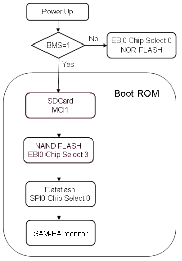
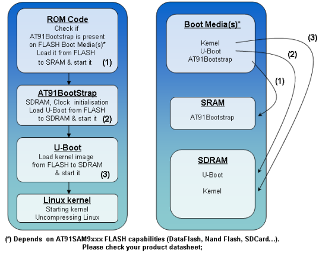

Description
Graph
at91bootstrap
Purpose
At91bootstrap project is part of the AT91 booting strategy.
AT91SAM9/AT91CAP9 devices
can boot from NOR
flash doing eXecute In Place (XIP) or it
can also boot from NAND
flash, serial
flash, SDCARD, ... Please refer to the product reference manual to get details on booting capabilities for a particular
device.
AT91bootstrap is a 2nd level bootloader. It is executed in internal SRAM if the AT91
device boots from the ROM or it is executed in place in NOR
flash.
The
at91bootstrap project is used at startup to:
- perform AT91 initialization: Oscillators, clocks, cache...
- transfer one or several application binaries from any kind of NVM to main memory
- transfer execution control to the next application
Requirements
The
at91bootstrap project includes settings for the different booting configurations possible with all Atmel evaluation kits.
Description
AT91 chips embed in ROM a program called "ROM code". It is started depending on BMS (Boot Mode Select) pin
state on reset. This ROM code scans the contents of different media like SPI DATAFLASH, NAND FLASH or SDCARD to determine if a valid application is available then it downloads the application into AT91 internal SRAM and run it. To determine if a valid application is present, the ROM code checks the eight ARM exception vectors.
If no application is available then SAM-BA monitor is executed. It waits for transactions either on the USB
device, or on the DBGU serial port. Then the SAM-BA tool
can be used to program FLASH or EEPROM present on your board.
For more information on this topic, please check the corresponding AT91 product datasheet section Boot Program .

ROM code boot sequence example (AT91SAM9263)
To set an exemple, the typical boot sequence of linux on AT91 devices is done in several steps :
- Processor comes out of reset and branches to the ROM startup code.
- The ROM startup code initializes the CPU and memory controller, performing only minimal initialization of on-chip devices, such as the console serial port to provide boot diagnostic messages. It also sets up the memory map for the kernel to use in a format that is consistent across platforms, and then jumps to the boot loader.
- The boot loader decompresses the kernel into RAM, and jumps to it.
- The kernel starts, mounts the root file sytem, execs the init and schedule the first application.

Linux startup sequence example
Customization
The most important
data in this project is contained in the file
boot.h It is the array "tabDesc". It contains the list of the modules to copy, the module size, the source memory address, the destination memory address and an optional description of the module. By default, this array contains only one line whose all
data is
C precompilator defines.
There are 2 cases :
- bootstrap has to copy only one module
- bootstrap has to copy several modules
-1- Bootstrap with one module
In this case, all the configuration
can be given as parameters in the make command line. There is no need to modify the source files to build a new bootstrap. The file
make_all contains the command lines to build all bootstraps for the ATMEL
boards.
Below the description of the command line parameters :
- CHIP Chip name (Ex: at91cap9)
- BOARD board name (Ex: at91cap9-dk)
- ORIGIN Source memory where the module to copy will read (dataflash|serialflash|sdcard|nandflash|norflash)
- DESTINATION Destination memory where the module will be copied (sdram|ddram)
- BIN_SIZE Binary size to copy
- FROM_ADDR Address in source memory where the module will be read (not used for SDCard boot)
- FILE_NAME file name to copy (only for SDcard boot)
- DEST_ADDR Address in destination memory where the module will be copied and where the bootstrap program will do a jump
- STR_DESCR Description of the module to copy
- BOOTNAME File name of the output binary. By default the output name is boot-
(BOARD)-(ORIGIN)2(DESTINATION).bin
- TRACE_LEVEL Determine the trace level. If not present, none trace.
-2- Bootstrap with several modules
In this case, as the number of binaries to copy is totally free, the configuration
can not be given entirely in command lines parameters. CHIP, BOARD, ORIGIN, DESTINATION and BOOTNAME,
TRACE_LEVEL are the only parameters in make command line. As there are several modules FROM_ADDR,
FILE_NAME, DEST_ADDR and STR_DESCR are no more used. The description of the different modules have to be given by modifying the array "tabDescr" in
boot.h. The jump address at the end of the modules transfert is the destination address of the first line in the array.
It is possible to call another "boot.h" file that this of the
at91bootstrap project. Add "PATH_BOOT_H=your_path" in the make command line to use another "boot.h" file This parameter allows user to have the same source file for several bootstrap project.
Usage
- Refer to make_all file to get building instructions matching your needs
- Load at91bootstrap binary into board memory using SAM-BA or any other flasher. The ROM Code looks for a valid application by analyzing the first 28 bytes corresponding to the ARM exception vectors. at91bootstrap implements ARM instructions foreither branch or load PC with PC relative addressing. The ROM Code looks for the sixth vector, at offset 0x14. It shall contains the size of the image to download. The flash programmer shall replace this sixth vector with the size of the image to download. Programing with SAM-BA, please use "Send Boot File" script instead of the generic "Send File" command.
- Start a new power up sequence to reset the board.
Note
- For device at91sam9260, the bootstrap's binary size should be less than 4KB due to the limitation of the internal RAM size.
- For devices at91sam9g20, the device CU-ES A, the ROM Code version is v1.4 and allows only to boot a file with size less than 8 KB, despite the fact that chip has 16KB in first SRAM bank. on device CU-A, the ROM Code version is v1.5 and allows to boot a file with size max of 16 kbytes., what is normal behaviour
Notes
Note 1: The use of FROM_ADDR and FILE_NAME is exclusive.
Note 2: the last 3 parameters are optional. All the other are mandatory.
Source
The documentation for this Directory was generated from the following files:
main.c